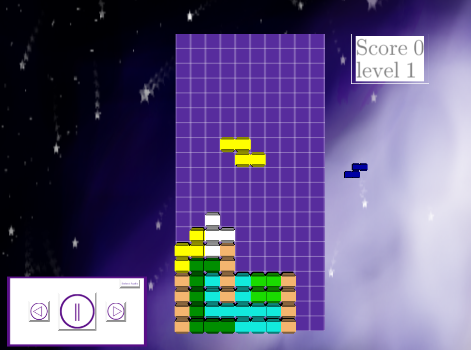
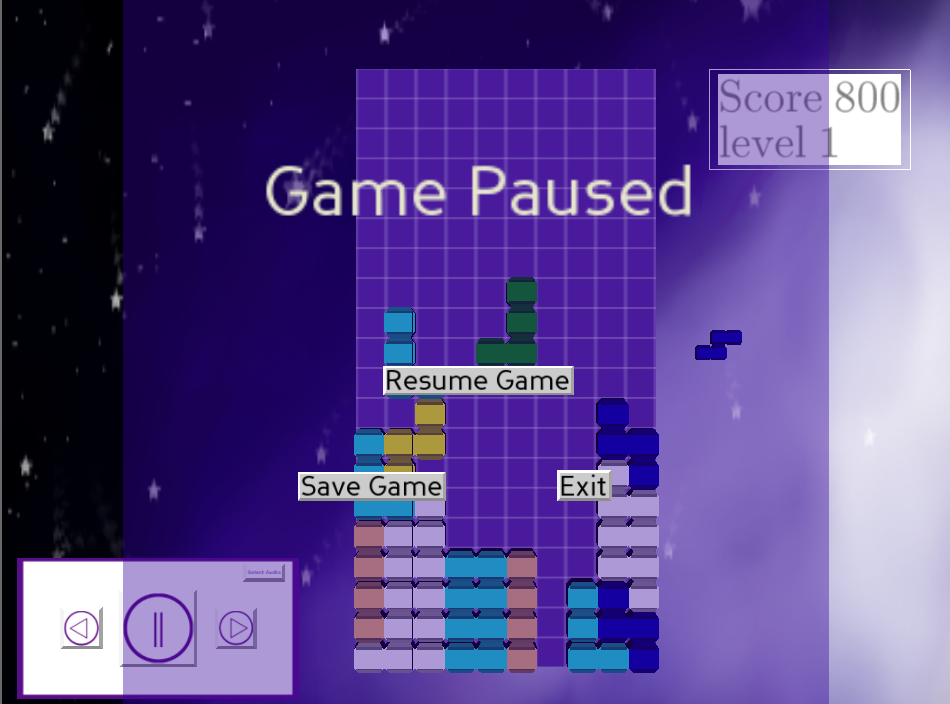
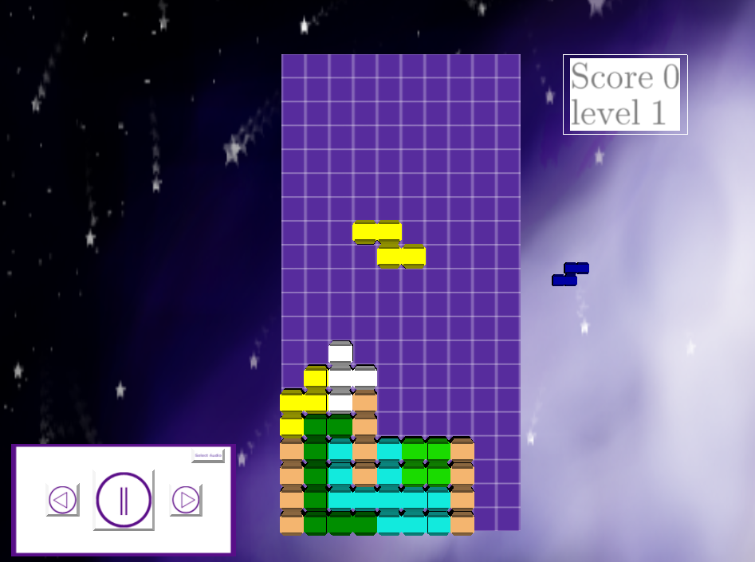
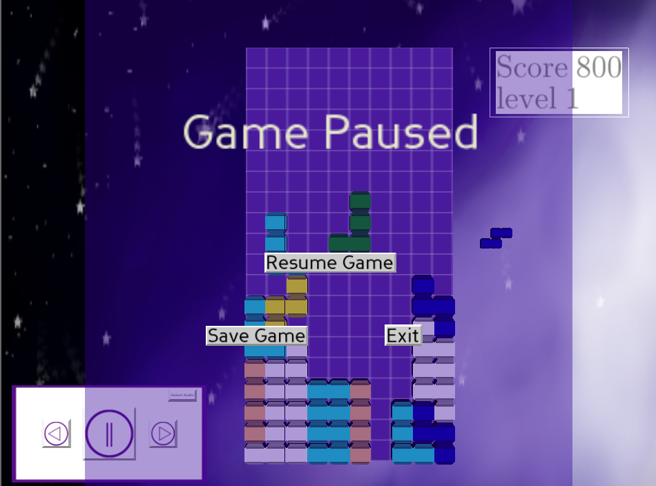

Tetris
A simple tetris clone made into a full featured game.The project contains a title screen , menu screen ,a few confugurable options
via the settings screen, a 'save game' function and pause game screen as well a game over screen.
A media player also exits so the player can listern to some music while stacking some tetriminos.
This is a fully independent project and not a tutorial clone.
Technologies
The project is built on the python programming language and the panda3d game engine.
Design and structure
Most tetris games store a set of precalculated rotation positions.
I opted to calculate the rotations on the fly. using a 2d matrix of some sort.
Classes are the conerstone of the design. the code does however favour encapsulation over inheritace.
Project code
The project can be found on github. Tetris